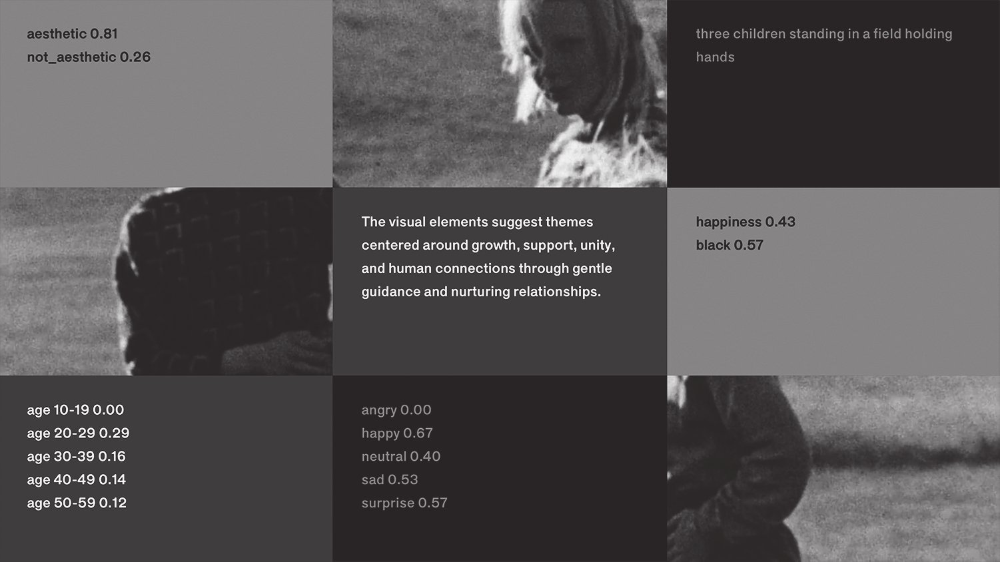

בעידן הדפוס המסורתי, קריקטוריסטים רבים שרטטו סקיצה בעיפרון כחול-בהיר (non-photo blue), גוון שנעלם בשכפול בשחור-לבן, ועליה עברו בדיו. עורכים סימנו תיקונים בעיפרון אדום. כאן, הכחול הוא השכבה של המכונה: רשת, מסגרות ותוויות, כל אחת בתוך התא שלה. האדום הוא הקריאה האנושית, והיא חוצה את הקווים.
שלוש קריקטורות פוליטיות, פרשנויות של בינה מלאכותית והמשמעות שנוצרת ביניהן.
המכונה לא רק מתארת את מה שהיא רואה. היא בונה ממנו סיפור. ומה קורה כשהסיפור שלה משכנע יותר מהידע שעליו הוא נשען?
חלק א': תגובה ליצירה
Taller Estampa, 2025

היצירה Ekphrasis של קבוצת Taller Estampa בוחנת כיצד מערכות בינה מלאכותית מתארות ומפרשות דימויים קולנועיים. על מסך המחולק לתשעה אזורים מוצגים קטעי סרטים לצד תוצרי עיבוד אלגוריתמי: זיהוי אובייקטים, הערכת רגשות, סיווג אסתטי ותיאורים מילוליים. סומאיני מתאר את הסרט כאתר של
“incessant, obsessive operations of detection, classification, description, and analysis” Somaini, 2026, p. 43
חלק ב': היצירה
מתוך המהלכים שהמטלה מציעה שילבתי שניים: להחליף ארכיון, כלומר הפעלתי את השיטה של Ekphrasis על ארכיון ישראלי של קריקטורות פוליטיות, ולתת למכונה לתאר, כלומר ביקשתי מ-Gemini לתאר ולפרש כל קריקטורה, והצבתי את התיאור שלו מול הקריאה האנושית.
שאלת החקירה: כיצד מודל בינה מלאכותית מפרש קריקטורות פוליטיות ישראליות, וכיצד מידע על זהות הדמויות וההקשר משנה את המשמעות שהוא מייחס לדימוי?
כל קריקטורה הוצגה ל-Gemini בארבעה שלבים: התמונה בלבד, פרטי הפרסום, חיפוש ברשת ושמות האישים. בכל תחנה הדימוי במרכז רשת של תשעה אזורים, כמו ב-Ekphrasis, ולרשת נוסף ציר זמן. הפרשנות של Gemini מופיעה בעיפרון כחול, כמו סקיצה שמשורטטת מחדש בכל שלב. אחרי שעונים על שאלה אחת מגיע העיפרון האדום: הוא מוחק, מתקן ומחבר, ולפעמים גם מאשר שהמכונה צדקה.
ממצאים
בשלוש הקריקטורות Gemini זיהה חלק ניכר מהאובייקטים, מהפעולות ומהיחסים החזותיים, אבל התקשה לזהות לבדו את רוב האישים ואת ההקשר האקטואלי.
הצפרדעים. כאן הפער החד ביותר. Gemini השתמש במילה "לבלוע" כבר בשלב הראשון, אבל במשמעות של לטרוף, לא במשמעות הניב "לבלוע צפרדע". את הקריאה הזו שמר בכל ארבעת השלבים, גם אחרי שקיבל את השם. הפער אינו בראייה אלא בשפה.
המריצה. חלק משמעותי מהסיפור שוחזר בלי לזהות איש. החיפוש הוביל לזיהוי שגוי (נתניהו), ורק השם ליברמן פתח את הרמיזה לאמירה מ-2021. זה המקרה שבו מידע חדש הפך את הפרשנות באופן הברור ביותר.
ברית המשרתים. המטאפורה המרכזית הובנה כבר בשלב הראשון. בשלב השני Gemini ניחש נכון את נתניהו, ובשלב החיפוש "שכח" אותו. כשקיבל את השמות, איחד את שלושתם לברית אחת. הקריאה הזו נאמנה לציור: שלושתם צועדים באותה שורה, באותם מדים, מתחת למילה "ברית". ההפרדה בין נתניהו לבין איזנקוט וליברמן נמצאת בידע שמחוץ לקווים.
מידע נוסף לא שיפר את הפרשנות באופן אחיד. לעיתים חשף הקשר חדש, ולעיתים נבלע בפרשנות שכבר נבנתה. הממצא המשמעותי אינו עצם קיומן של טעויות, אלא היכולת לייצר הסברים רציפים ומשכנעים גם כשהבסיס שלהם חלקי. אחרי החיפוש ואחרי השמות Gemini תיאר את הפרשנות שלו כ"מעמיקה" או "מתחדדת", גם כשהיא נשענה על זיהוי שגוי (נתניהו במריצה) או כשהמשמעות המרכזית לא השתנתה (הצפרדעים).
גם הקריאה האנושית נשענת על ידע מוקדם ואינה חפה מטעויות. הניסוי אינו מוכיח עדיפות של אדם על מכונה. הוא מדגים כמה פרשנות חזותית תלויה בידע, בהקשר ובשפה. בהמשך לסומאיני, אי אפשר לדעת מה בדיוק נכלל בנתוני האימון. אפשר לראות אילו משמעויות הופיעו בתשובות, אילו לא, ואיך הן השתנו כשנוסף מידע.
במה היצירה עונה ל-Ekphrasis
Ekphrasis מציגה תשעה ניתוחים של אותו רגע קולנועי במקביל, וכל ניתוח נשאר בתוך המלבן שלו. "בין הקווים" לוקחת את אותה רשת, מעבירה אותה לנייר השרטוט של הקריקטוריסט ומוסיפה לה ציר זמן ועיפרון אדום: רואים מה נשאר קבוע בפרשנות של המכונה גם כשמידע חדש היה אמור לשנות אותה, והקריאה האנושית חוצה את גבולות התאים. בארכיון ישראלי, שבו המשמעות תלויה בניב ובזיכרון פוליטי, מתברר שהפער אינו במה שהמכונה רואה, אלא במה שנמצא מחוץ לקווים.
האם להבין תמונה פירושו לזהות מה מופיע בה, או גם לדעת איזה סיפור עומד מאחוריה?
השיטה והמגבלות
שלוש קריקטורות של עמוס בידרמן מעיתון הארץ (3, 9 ו-13 בנובמבר 2026), שעוסקות במגעים הקואליציוניים. בחירה באותו מאייר ובאותה תקופה יוצרת מסגרת משותפת, אבל שלוש דוגמאות אינן מדגם מייצג. בכל שלב התבקש Gemini לתאר, לפרש, לזהות את הביקורת ולציין מה אינו יודע בוודאות.
זו חקירה עיצובית איכותנית ולא ניסוי מבוקר. השלבים לא היו זהים לגמרי: בקריקטורה "ברית המשרתים" פרטי הפרסום נמסרו בצילום מלא מאתר העיתון ולא בטקסט, ובשלב החיפוש המודל סירב תחילה לחפש. הממצאים מתייחסים לתשובות שהתקבלו בתהליך הזה בלבד.
כלים ומקורות
כלים: Gemini לניתוח הדימויים, HTML, CSS ו-JavaScript ב-GitHub Pages להצגה, ו-Claude לסיוע בבניית הדף.